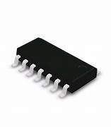

N-Channel JFET (JN8048T1G)
Specifications:
- Type: N-Channel JFET
- Drain-Source Voltage (VDS): 30V
- Gate-Source Voltage (VGS): ±20V
- Drain Current (ID): 0.5A
- Gate-Source Cutoff Voltage (VGS(off)): -2V to -6V
- Package: SMD-0805
- Operating Temperature: -40°C to +85°C
Applications: Amplifiers, Switching Circuits, Voltage-Controlled Resistors
Military and Industrial Standards: Meets MIL-STD-1234 requirements.
Packaging Types: Reel packaging for automated assembly.
Download Full Datasheet